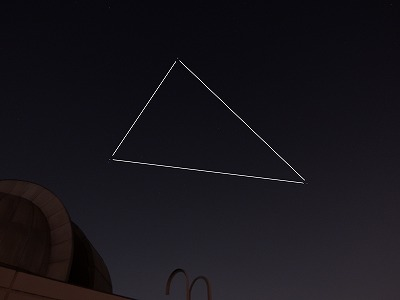
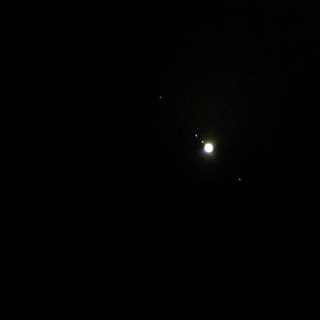

最終更新:2015.11
All rights reserved by Shibuya Makuhari High School Astronomy Club
All rights reserved by Shibuya Makuhari High School Astronomy Club
夜間観測
太陽だけではなく、夜の星も見ています！！

夜の学校に泊まります！
夜間観測会は大体２月に一度のペースで開いています。
トップの写真を見ればわかるように、幕張の夜はとても明るいです。
星を見るにはあまり適していません。
みんな深夜まで働きすぎです本当に

それでも屋上の屈折望遠鏡を使えばこんなものが見えたり
(iPhoneで撮影)